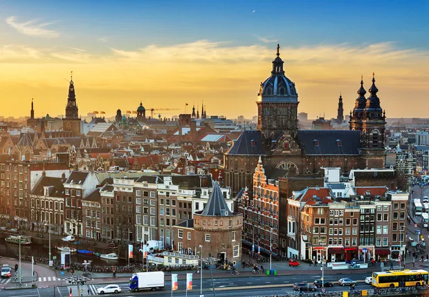

Seja bem vindo à Holanda!

Holanda, é uma região histórica no centro-oeste dos Países Baixos. Foi um condado do Sacro Império Romano-Germânico e mais tarde a liderança da República das Sete Províncias Unidas dos Países Baixos. A área é hoje dividida em duas províncias: Holanda do Norte e Holanda do Sul, criadas em 1840
